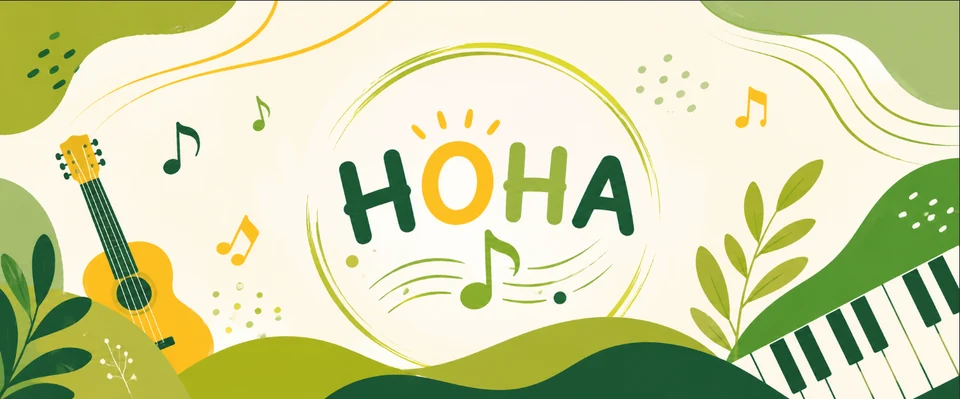

Знайомство з інструментом
Посадка, положення гітари та базове положення рук.
ГІТАРА ДЛЯ ДІТЕЙ
Допомагаємо дитині поступово познайомитися з гітарою, нотами й табулатурами, ритмом та простими мелодіями. Заняття проходять індивідуально онлайн і адаптуються до рівня учня.

Перший звук.
Твоя музична історія.
Посадка, положення гітари та базове положення рук.
Поступово знайомимося з простими нотами, табами та розташуванням звуків на грифі.
Розвиваємо відчуття ритму, координацію рук, перебір і простий бій.
Нові навички застосовуємо у простих мелодіях і композиціях, які цікаво грати.
Дитина знайомиться з викладачем і форматом онлайн-занять, а школа визначає зручний формат подальшого навчання.
Після пробного заняття новий учень може пройти перший повний урок без оплати.
Далі батьки можуть обрати зручний пакет і графік на основній сторінці уроків гітари.
Заняття проводять викладачі з профільною музичною освітою, які проходили педагогічну практику. Програму й темп навчання адаптуємо до рівня та цілей учня.
Так. Попередній досвід гри не потрібен. Починаємо з базових навичок і поступово додаємо новий матеріал.
У НОНА навчаємо гри на класичній та акустичній гітарі. Якщо інструмента ще немає, перед покупкою можна уточнити у школи, який варіант краще підійде. Як вибрати першу гітару для навчання →
Онлайн у Google Meet. Потрібні гітара, стабільний інтернет і пристрій із камерою та мікрофоном.
Для зв’язку з батьками школа використовує Viber. Також можна звернутися через контакти НОНА Music School.
Так. Пробний урок триває 30 хвилин і є безкоштовним. Для нового учня перший повний 60-хвилинний урок після пробного також безкоштовний.
Почніть із безкоштовного пробного заняття та подивіться, чи підходить дитині формат навчання.